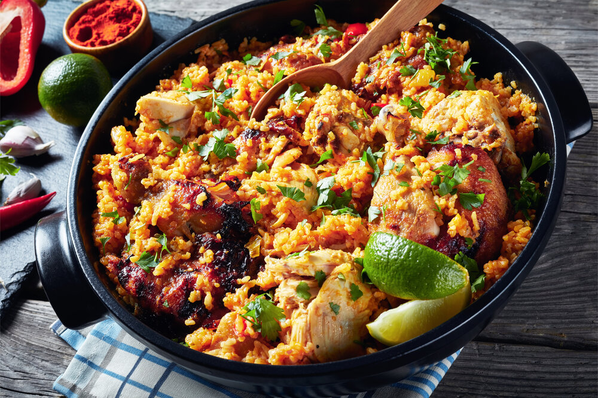

Paella Valenciana a Paella de Marisco

- Maso nakrájejte na kusy cca 5x5 cm, paličky nechte vcelku, osolte. Na široké pánvi rozpalte olivový olej, a maso na něm pozvolna opékejte ze všech stran, aby zezlátlo, asi 10 minut (paličky 15 minut). Na posledních pár minut přidejte podélně nakrájené osminky paprik a opečte z obou stran. Ty vyjměte a nechte zatím stranou.